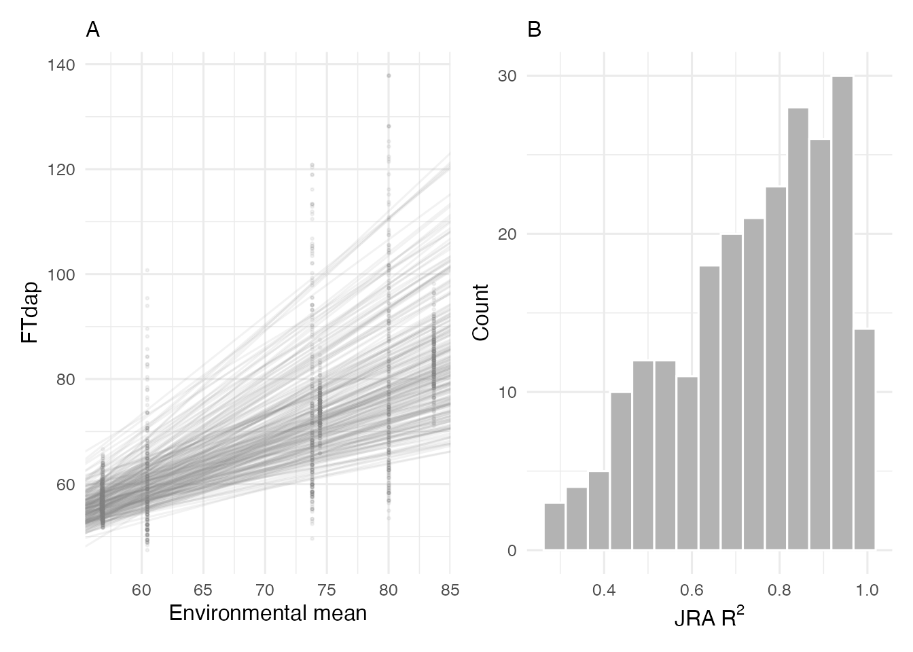

Joint Regression Analysis
jra.RmdOverview
Joint Regression Analysis (JRA) is a classical method for characterizing genotype-by-environment (GxE) interaction. Originally proposed by Finlay and Wilkinson (1963) and refined by Eberhart and Russell (1966), JRA regresses each genotype’s performance on the environmental mean. The resulting slope and intercept summarize how each genotype responds to environmental quality.
Statistical Model
The observed phenotype of genotype in environment is modeled as:
where:
- is the observed trait value of genotype in environment
- is the intercept (baseline performance) of genotype
- is the regression slope (sensitivity) of genotype
- is the environmental mean (environmental index)
- is the residual error
The environmental index serves as a proxy for overall environmental quality — higher values indicate more favorable growing conditions. Each genotype’s slope quantifies its responsiveness to environmental variation, while the intercept reflects its general performance level.
CERIS implements JRA through the jra_model() function.
This vignette demonstrates how to fit the model, visualize the results,
and interpret the output.
Data Setup
Load the sorghum dataset and prepare the inputs required by
jra_model():
library(runCERIS)
d <- load_crop_data("sorghum")
exp_trait <- prepare_trait_data(d$traits, "FTdap")
env_mean_trait <- compute_env_means(exp_trait, d$env_meta)
line_by_env <- prepare_line_by_env(exp_trait, env_mean_trait)The line_by_env matrix is a wide-format table with
genotypes in rows and environments in columns, containing the observed
trait values. This is the primary input to the JRA model.
line_by_env[1:5, 1:5]
#> line_code PR12 PR11 PR14S KS11
#> 1 E10 53.1187 53.4805 82.8025 95.5120
#> 2 E100 60.0257 66.6417 64.0564 67.8710
#> 3 E101 56.9559 58.7449 65.3437 80.0534
#> 4 E102 56.5722 54.3579 60.0090 72.0880
#> 5 E103 53.8861 54.7966 77.9528 120.8179Fitting the JRA Model
The jra_model() function fits a simple linear regression
for each genotype against the environmental means:
jra_result <- jra_model(line_by_env, env_mean_trait)
head(jra_result)
#> line_code Intcp Intcp_mean Slope_mean R2_mean
#> (Intercept) E10 -24.2110 79.9955 1.5008 0.6681
#> (Intercept)1 E100 29.0797 69.9480 0.5886 0.6418
#> (Intercept)2 E101 -0.7133 72.5409 1.0550 0.9373
#> (Intercept)3 E102 9.2963 66.4430 0.8231 0.9763
#> (Intercept)4 E103 -60.6675 87.9326 2.1402 0.5742
#> (Intercept)5 E104 -26.4641 77.3758 1.4956 0.6291The output data frame contains one row per genotype with the following columns:
| Column | Description |
|---|---|
line_code |
Genotype identifier |
Intcp |
Raw intercept from the regression |
Intcp_mean |
Intercept adjusted to the mean environmental index |
Slope_mean |
Slope of the regression on the environmental mean |
R2_mean |
Coefficient of determination |
Summary Statistics
A quick summary of the slope and R-squared distributions reveals the overall pattern of GxE interaction in the trial:
summary(jra_result$Slope_mean)
#> Min. 1st Qu. Median Mean 3rd Qu. Max.
#> 0.3552 0.7203 0.9294 1.0000 1.2095 2.2108
summary(jra_result$R2_mean)
#> Min. 1st Qu. Median Mean 3rd Qu. Max.
#> 0.2874 0.6173 0.7718 0.7394 0.8893 0.9935The mean slope across all genotypes should be close to 1.0 (by construction, since the environmental index is the mean across genotypes). The spread of slopes indicates how much genotypes differ in their responsiveness.
Visualization
The plot_jra() function produces a two-panel
display:
- Left panel: Regression lines for all genotypes plotted against the environmental mean, with observed data points.
- Right panel: Histogram of R-squared values across genotypes.
plot_jra(exp_trait, env_mean_trait, jra_result, trait = "FTdap")
In the left panel, the spread of regression lines shows the degree of GxE interaction. Parallel lines would indicate no crossover interaction (genotype rankings remain constant), while crossing lines indicate rank changes across environments.
The R-squared histogram shows how well the simple linear model fits each genotype. High R-squared values across most genotypes suggest that a linear model captures the main pattern of GxE interaction. Genotypes with low R-squared may exhibit non-linear responses or be influenced by factors not captured by the environmental mean.
Interpreting Slopes
The slope from JRA has a direct biological interpretation:
| Slope | Interpretation |
|---|---|
| > 1 | Responsive: The genotype is above average in good environments and below average in poor ones. It exploits favorable conditions but is vulnerable to stress. |
| ~ 1 | Average: The genotype tracks the environmental mean proportionally. Its performance mirrors the trial average. |
| < 1 | Stable: The genotype is less affected by environmental variation. It performs relatively better in poor environments but does not fully capitalize on good ones. |
Breeders targeting broad adaptation prefer genotypes with high intercepts (good overall performance) and slopes near 1. Those targeting specific environments may select responsive genotypes (slope > 1) for favorable conditions or stable genotypes (slope < 1) for stress-prone regions.
Relationship to CERIS
JRA uses the environmental mean as the environmental index, which is
a simple and widely used approach. However, the environmental mean
conflates all sources of environmental variation into a single number.
CERIS improves on this by identifying a specific environmental parameter
and developmental window that best explains GxE variation. The
slope-intercept analysis in vignette("reaction-norms")
extends JRA by using the CERIS-derived kPara as the environmental index,
often yielding higher R-squared values and more biologically
interpretable results.